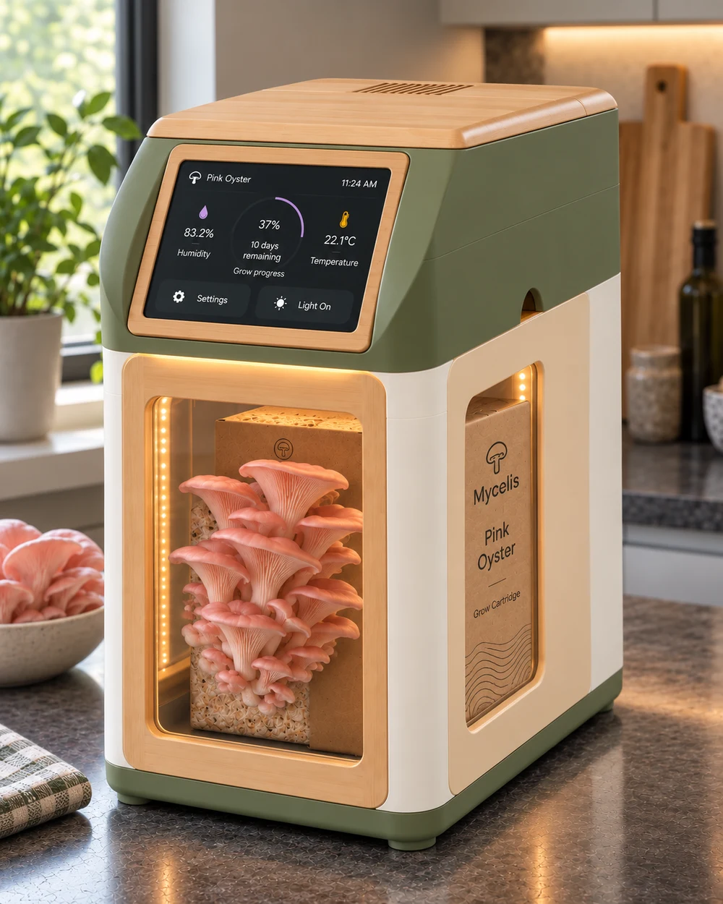
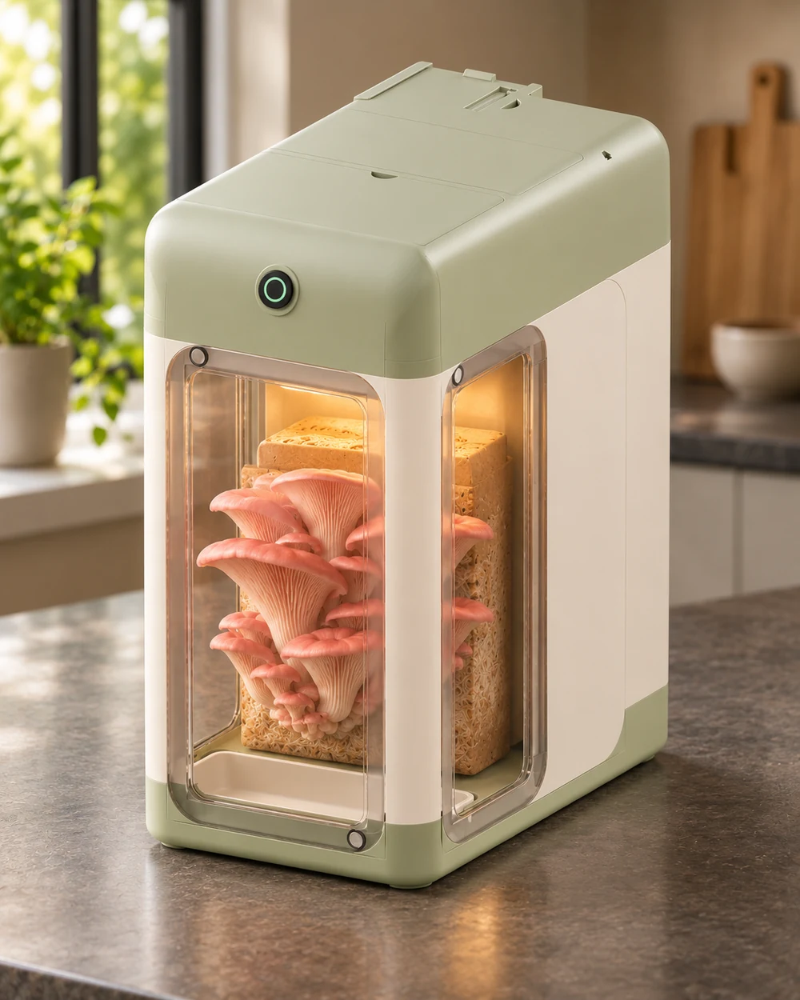

Fibre.
Reference data for raw oyster mushrooms include dietary fibre. How much ends up in a meal depends on the portion and how you prepare it. [1]
Mycelis
A countertop appliance that automates key parts of growing oyster mushrooms at home.
The aim is fewer things to remember during a grow, in an appliance you'd want to keep on the bench. We're developing ready-to-grow cartridges and support for compatible homemade cartridges too.
As of 17 November 2026, Mycelis has grown mushrooms using its automated systems. Airflow still needs refinement. The Pro prototype is nearing completion; Base is in development.
Join the Waitlist
Base & Pro · In development
Both are intended to grow the same produce with minimal intervention. Pro adds convenience, information and control—not a promise of better harvests.

| Feature | Base | Pro |
|---|---|---|
| Development status | In development | Prototype nearing completion |
| Water delivery | Automatic | Automatic |
| Start / stop | Single button No screen | Touchscreen |
| Lighting | Manual toggle | Automatic schedule |
| Harvest estimates | Not included | Species + room temperature |
| Active heating / cooling | None | None |
| Wi-Fi | Not required | Optional for date/time |
These are intended model features, not production-ready specifications. As of 17 November 2026, Base is in development and Pro is nearing prototype completion. Images are design renders. Prediction accuracy is not yet validated; estimates are not guaranteed harvest dates. Watering doses and schedules may differ between Base and Pro without promising different growing results.
Mycelis Base is designed with one start/stop button, a short countdown before activation and a flashing red error indicator. Hold the button for three seconds to toggle the light. Pro uses a touchscreen for start/stop, crop selection, environmental readings and harvest estimates.
Mycelis Pro estimates timing using species and room temperature. Base does not provide harvest predictions. Accuracy is not yet validated. These are guides, not guaranteed harvest dates.
Automatic water delivery, humidity control and fan control are intended for both models. Mycelis measures temperature and humidity: Base uses readings internally where needed; Pro displays them. Measuring temperature does not mean regulating it. Neither model has active heating or cooling.
No app or cloud connection is required for growing. Pro can optionally use Wi-Fi for date/time, rather than remote control. No remote monitoring or AI growing features are included at launch.
Power recovery is a design intention, not a tested reliability feature. Base is intended to return in a paused state after power is restored. Pro is intended to recover stored information and obtain date/time through optional Wi-Fi or request manual input. Automatic grow resumption is not promised; this behaviour still needs testing.
Why oyster mushrooms?
A hot pan, a little oil, garlic if you like. Or add them to noodles, eggs or a risotto. Growing them is interesting; having another ingredient to cook with is the reason to do it.
Reference data for raw oyster mushrooms include dietary fibre. How much ends up in a meal depends on the portion and how you prepare it. [1]
The same data list riboflavin (B2) and niacin (B3). They're useful details about the food, not a nutrient specification for a Mycelis cartridge. [1]
Pink oyster is the variety in our prototype. Published research on pink oysters has measured thiamine (B1) and riboflavin (B2), with levels affected by the growing substrate. That study didn't test a Mycelis harvest. [2]
We haven't lab-tested the nutrients in a Mycelis harvest. General oyster-mushroom data aren't a pink-oyster nutrition label. Species, growing conditions, portion and cooking all matter; we don't claim that pink is healthier than blue or grey, or that the machine makes mushrooms more nutritious.

Prototype progress · 17 November 2026
The October prototype photo shows pink oysters growing in Mycelis. Automated mushroom growth has been demonstrated, but airflow still needs refinement. As of 17 November 2026, the Pro prototype is nearing completion; it is not ready for production.
There's still finishing work to do. The green version above shows the design we're aiming for, so expect some details to change as we go.
Sunday market demonstrations are planned, but no event or date is confirmed. Register interest for announcements.
The intended Mycelis routine
This is the intended design sequence, not final validated customer instructions. Our planned refills hold a prepared, colonised block in a plastic bag inside a cardboard shell. Compatible homemade cartridges are intended to be supported too.
Shortly before use, the intended setup is to tear off one cardboard cover with your thumb and cut an X-shaped opening in the plastic bag beneath it. Then insert the cartridge and fill the reservoir.
Start with the Base button or Pro touchscreen. Both are intended to automate water delivery, humidity and fan control. Base lighting is manually toggled; Pro adds scheduling and harvest estimates. You'll still check the grow. Automated growth has been demonstrated, with airflow still being refined.
After the first harvest, remove the opposite cardboard cover and cut a fresh X in the bag. Rotate the cartridge 180° to try for further growth. The intended timing is soon after harvest, ideally the same day; a second harvest isn't guaranteed.
Loading a cartridge
All three window panels are removable and magnetically attached in the intended Mycelis design. A side window comes away to let you slide the cartridge into place; the front window is removable too.
That means leaving space beside the machine for loading and removal. Final clearances, cartridge preparation and cleaning instructions still need validation.
The loading image is a generated concept, not a record of a completed test. The grow in the separate prototype photo is pink oyster.

Preliminary / indicative pricing · Not available to order
We'll produce early cartridge batches in-house. The planned refills will arrive fully colonised and ready to fruit after opening, without you having to prepare or inoculate the mushroom block.
Blue Oyster, Italian Grey Oyster and Pink Oyster are our intended launch trio. All three have been grown successfully during development. Varieties share the same prices, and you can mix them within a pack.
Indicative price
NZ$25
NZ$25 each
Indicative price
NZ$45
NZ$22.50 each
Best per-cartridge value
Indicative price
NZ$60
NZ$20 each
All prices are preliminary and shown in New Zealand dollars. Shipping is not included. Pricing may change as we refine early production. Cartridges aren't available to order yet.
We're exploring local collection and delivery options. Availability and any delivery charges are still to be confirmed.
After the first harvest, prepare the opposite face by removing its cardboard cover and cutting a fresh X in the plastic bag, then rotate the cartridge 180°. The harvested face is intended to rest against the enclosure wall without resealing; that arrangement still needs testing.
The intention is to turn it soon after harvest, ideally the same day, with no intermediate storage. Growth after flipping isn't guaranteed, and we don't promise a second harvest or a particular yield.
Storage conditions and shelf-life guidance haven't been validated yet. We'll confirm them by variety after testing and appropriate technical input, rather than advertise a storage period now.
This concerns cartridges before their first use, not storage between fruiting faces. No storage temperature, refrigeration conditions or storage duration is confirmed yet.
Ready-to-grow or homemade
Prefer to make your own? Mycelis is designed to support compatible DIY mushroom cartridges too. We'll publish cartridge dimensions and compatibility guidelines once the final design is validated.
The aim is a choice, not dependence on our consumables. Official refills are intended to offer a convenient, tested setup; compatible DIY cartridges give you room to experiment. No subscription will be required.
About using Mycelis
Compatible homemade cartridges are intended to be supported. We'll publish the validated fit, ventilation, drainage and material requirements before launch. That doesn't mean every grow bag or third-party cartridge will be suitable.
No subscription will be required. Our ready-to-grow cartridges are being developed for convenience, alongside support for compatible DIY cartridges. The cartridge range and any future refill services are still being worked out.
Blue Oyster, Italian Grey Oyster and Pink Oyster have all been grown successfully during development and are our intended launch trio. They share the same pricing, with mix-and-match packs planned. That doesn't guarantee a particular harvest or confirm repeatable second-face results for each variety.
The entire official cartridge is single-use and replaced when you're finished with it. There is no reusable holder to transfer. The intended second-face grow uses that same cartridge before disposal; single-use doesn't mean throwing it away after the first harvest.
The intended cardboard shell and plastic substrate bag are designed to separate after use. Cardboard recycling, organic-bin acceptance and spent-substrate use in soil still need verification. We aren't claiming the whole cartridge is recyclable or compostable. We'll publish confirmed end-of-use and cleaning guidance before launch.
Labels are planned to identify the variety and packaging date, with storage instructions, expiry guidance and growing instructions. Storage temperatures, dates and any necessary safety warnings still need testing and appropriate review before printing.
Batch numbers for traceability, a QR link to illustrated instructions, substrate ingredients and packaging-separation/disposal guidance are proposed additions. The labels and guide link aren't finalised yet.
Base has one start/stop button and no screen; Pro uses a touchscreen. Neither needs an app or a cloud connection for growing. Pro's optional Wi-Fi is for date/time, not remote monitoring. See the model comparison for intended controls, estimates and untested power-recovery behaviour.
A kitchen bench is the intention, with space at the side to load the cartridge. Final dimensions aren't published yet, so please wait for those before planning a tight spot for it.
We haven't tested that. Mycelis is being designed to bring the chamber and growing controls into one appliance. That isn't evidence of better nutrition than a normal kit, or of a particular health outcome.
Cook oyster mushrooms before eating them, and don't eat mushrooms that are rotting or spoiled. Growing indoors doesn't replace careful food handling. We'll publish the finished harvest and cleaning instructions before launch. University of Florida oyster-mushroom guidance.
They aren't on sale yet. The cartridge prices above are indicative while we refine early in-house production. Final availability, collection or delivery options and release timing still need confirmation. Join the waitlist to hear when there's more to share.
Mycelis
Register interest for development updates, refill plans and demonstration announcements. Sunday market demonstrations are planned, but no event is confirmed. Signing up is not a preorder or reservation.
Join the Waitlist